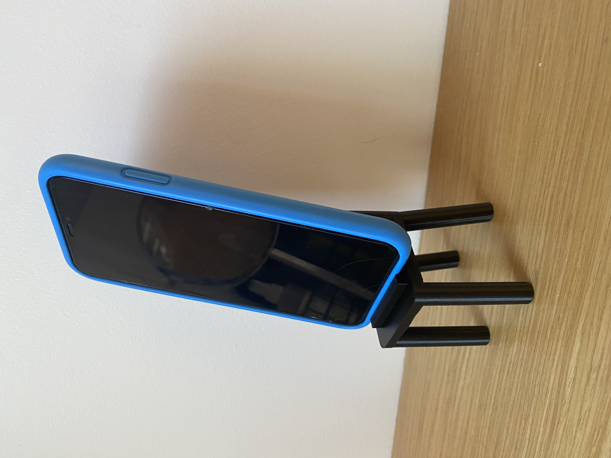

1. Hannaðu módel fyrir 3D prentun sem ekki væri hægt að framkvæma með frádráttar framleiðslu (addative vs subtractive). Prentaðu hlutinn (max 100g af plasti skv. slicer).
2. 3D Skannaðu einhvern hlut, t.d. með photogrammetríu. Sýndu framvinduna á heimasíðunni þinni.
3D prentun og 3D skönnun
- 3D Skönnun
-
Fyrir 3D skönnunina þá sótti ég forrit í símann minn sem heitir "Polycam" og ákvað að skanna litla barbapabba styttu sem ég á. Ég tók 38 myndir og svo sá forritið um að skanna hlutinn. Hér að neðan má sjá myndir af skönnuninni í forritinu.
- 3D Prentun
-
Ég byrjaði á að hugsa mér hvað ég vildi 3D prenta og ákvað að lokum að prenta símastand. Ég notaði Fusion 360 til að teikna upp þvíviða mynd af hlutnum sem ég vildi prenta. Ég ákvað að teikna símastandinn eins og stól með litlu stykku upp úr "sessunni" sem heldur símanum uppréttum. Ég byrjaði að teikna sessuna sem 50x50mm kassa með hringi í hverju horni með 10mm þvermál. Svo extrude-aði ég sessunni upp um 5mm. Svo notaði ég hringina í sessu skissunni fyrir framfæturnar og stólbakið. Fyrir afturfæturnar bætti ég smá halla við til að bæta stöðugleika stólsins. Þetta gerði ég með því að búa til nýtt "plane" með 8 gráðu halla. Þetta er gert með því að fara undir "Construct" og velja "Plane at angle" og velja línuna sem er aftast á sessunni.
Svo teiknaði ég 2 hringi alveg eins og framfæturnir og extrude-aði um 60 mm. Til að fá beina línu undir hallandi fæturna þá bjó ég til nýja skissu framan á stólinn 50mm fyrir neðan sessu stólsins og teiknaði kassa sem ég extrude-aði svo um 60mm svo valdi "cut". Þar á eftir bætti ég vil stólbakinu. Þá extrude-aði ég hringjunum fyrir bakfæturnar upp um 30mm og bætti svo við nýrri skissu sem var bakið á stólnum. Bakinu extrude-aði ég svo upp um aðra 30mm. Að lokum bætti ég vil litlum kassa á sessu stólsins sem var 5x40mm stór og extrude-aði upp um 4mm. Þá er stóllinn tilbúinn og lítur svona út:
Þá er komið að því að prenta stólinn út. Þá þarf að export-a skránni sem .stl skrá svo hægt sé að opna skránna í slicer forritinu. Ég opnaði skránna mína í tölvu skólans og þurfti þar að bæta við styrkingum undir sessu stólsins og undir stólbakið þar sem 3D prentarinn getur ekki prentað svona langt í 90 gráðum. Hér má sjá mynd af styrkingunum sem ég bætti við með "Paint on supports" og hvernig stillingar prentarans voru settar.


Svo var slicer skráin sett á usb kubb sem var svo tengdur í 3D prentarann og þá var hægt að prenta hlutinn út. Hér má sjá hlutinn eftir að búið var að brjóta styrkingarnar af.
